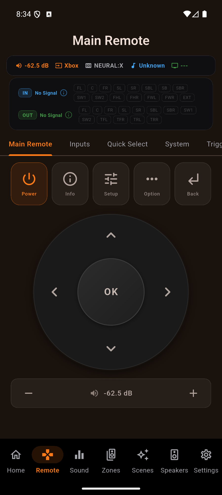

Full D-pad and transport control with a live header that shows the input, sound mode, and the actual channels in use - so you always know what your Denon or Marantz is doing. Four pages: swipe or tap the page tabs.


The Main Remote's volume bar shows the master volume live, and the header chip mirrors it. Prefer the receiver's own numbers over decibels? In Settings you can switch the volume readout between absolute dB (for example -62.5 dB) and the relative scale - both the header chip and the volume bar follow your choice, so the whole Remote speaks the units you think in.

Tap the plus or minus and the volume moves one step. Hold it and it keeps moving, smoothly, until you let go - the way the physical remote behaves and the way your hand expects. Release and the receiver lands exactly on the step you stopped on, never past it.
Underneath, the app is coalescing: it accumulates where you are heading and paces what it actually puts on the wire, so a long hold does not flood a receiver that answers slowly. Small moves are smooth too - a change of a few decibels ramps rather than jumping.
The Remote header carries a compact channel strip: the incoming signal on one row, what your receiver is driving on the other, with every speaker the receiver names. A stereo track over the network shows two channels in and a full upmix out.
Your Shield, your HTPC and your Blu-ray player can each wear their real face on the input tiles - from any image you have. It has its own guide now.
On the Mac App Store and Microsoft Store builds you can drive playback and volume straight from the keyboard - no reaching for the mouse. Use Cmd on macOS or Ctrl on Windows, and your keyboard's dedicated media keys work too. Nothing fires while you're typing in a text field, so renaming an input or entering an IP is never interrupted.
| Shortcut | Action |
|---|---|
| Cmd + Space / Ctrl + Space | Play / Pause |
| Cmd + . / Ctrl + . (period) | Stop |
| Cmd + Right / Ctrl + Right | Next track |
| Cmd + Left / Ctrl + Left | Previous track |
| Cmd + Up / Ctrl + Up | Volume up |
| Cmd + Down / Ctrl + Down | Volume down |
| Cmd + M / Ctrl + M | Toggle mute |
| Media keys: Play, Pause, Play/Pause, Stop | The matching transport action |
| Media keys: Next Track, Previous Track | Skip to next / previous track |
| Media keys: Volume Up, Volume Down, Mute | Volume up, volume down, mute |
Getting started · Home Screen · Scenes · Custom Icons · Sound · Graphic EQ · Speakers · Why a control is locked · The Assistant · Home Automation · Home Assistant dashboard · Zones · Radio (FM/AM) · On-Screen Display · Settings · Languages · Volume Controls · Backup & Restore · Now Playing & HEOS
One-time purchase, no ads, no subscriptions. Connect in under a minute.